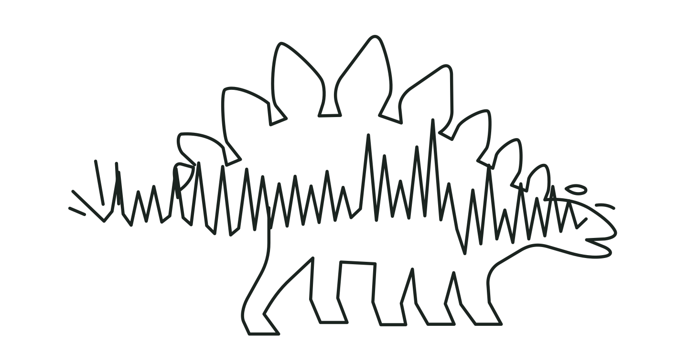

The Saurus ecosystem
Saurus Style Guide
Clear steps. Careful evidence. A little yellow tape.
A shared identity for the audio workspace, registry, and website.
01 / Identity
A dinosaur in the signal.
The stegosaurus silhouette and audio waveform are one continuous idea: a memorable creature built from the evidence Saurus reads.
Use the detailed mark where it has room to breathe. The compact three-bar symbol remains available only for tiny app icons and favicons.

Keep tape narrow. Keep text off the stripes.
02 / Color
Quiet surfaces. Clear signals.
#1B2420#F3F5F4#FFFFFF#06283A#F4D03F#216247#B86045Use ink on yellow. Pair every result color with an explicit outcome. Copper is an identity accent, not a status.
03 / Typography
Built for reading.
Segoe UI, with system fallbacks. A fixed type scale, ordinary spacing, and short, direct labels.
Keep the registry file private.
16-bit PCM WAV
HANDLE / 7A21C49004 / Components
A guided workspace.
Commands
Disabled specimens. Yellow is reserved for the active primary command.
Read the written guideFields
Sequence
- 01Choose source audio16-bit PCM WAV
- 02Add registry detailsProject, recipient, optional notes
- 03Save your filesEncoded WAV + private registry JSON
Feedback
This file matches the selected retained record.
This check could not verify the selected claim.
Choose an existing 16-bit PCM WAV.
05 / Language
Say what the evidence says.
Encoding, statistical detection, and attribution are different operations. Keep that distinction visible.
Encode file
Create a registered audio copy and retain its private verification file.
Decode / verify
Verify a selected registry claim. This prototype does not discover unknown identities.
No accepted match
An abstention is not proof that the audio is unmarked.